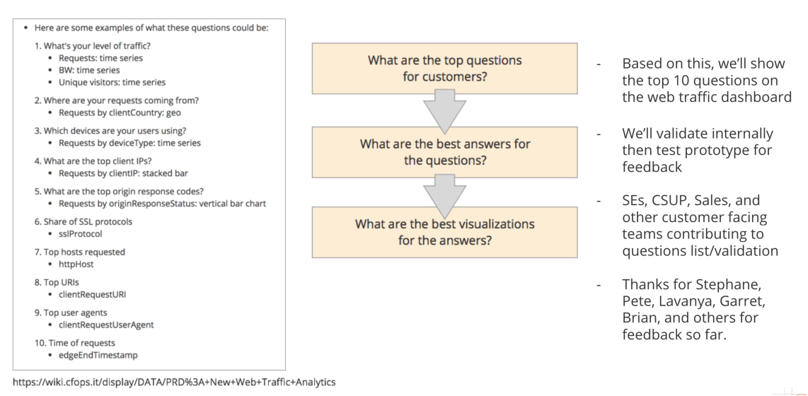
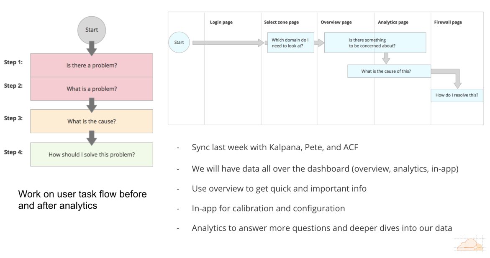
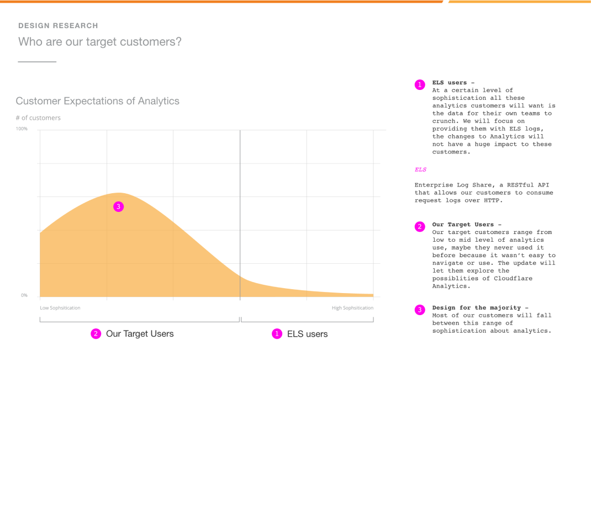
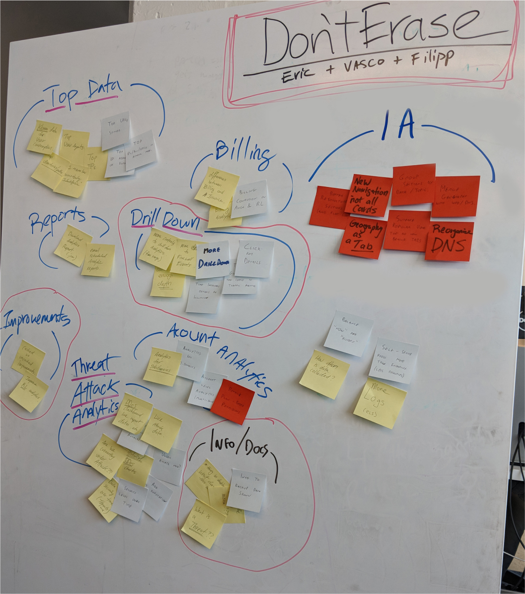
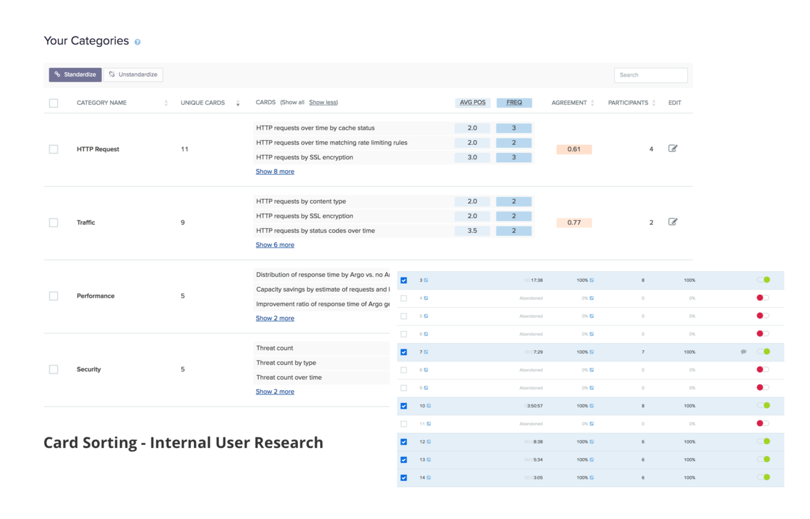
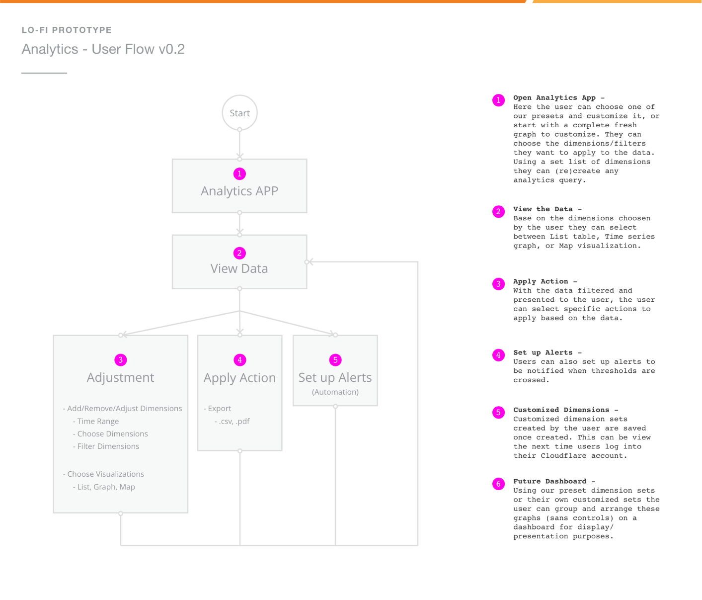
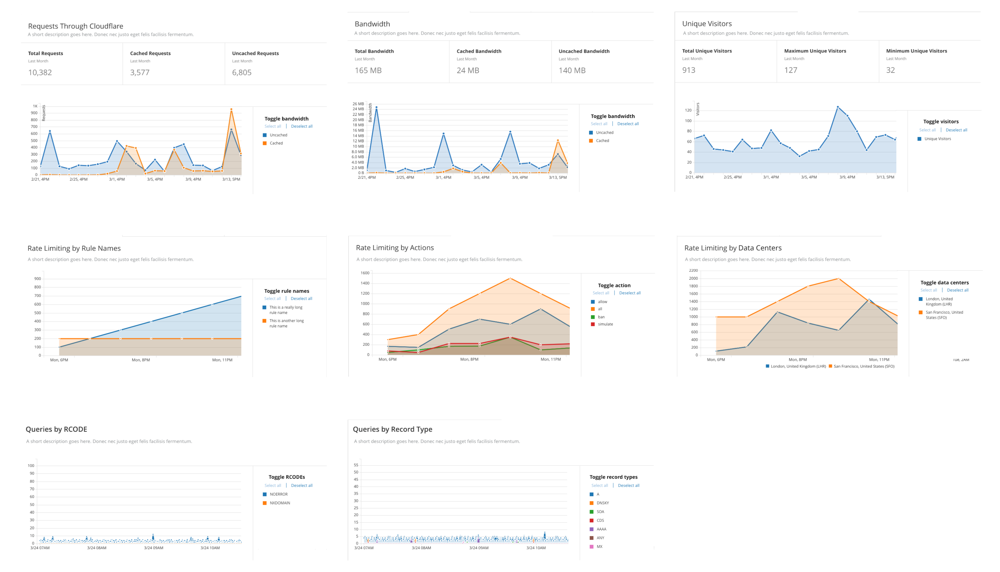
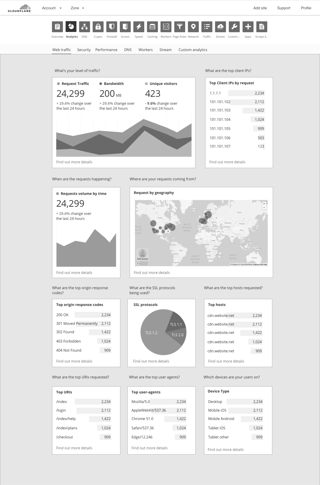
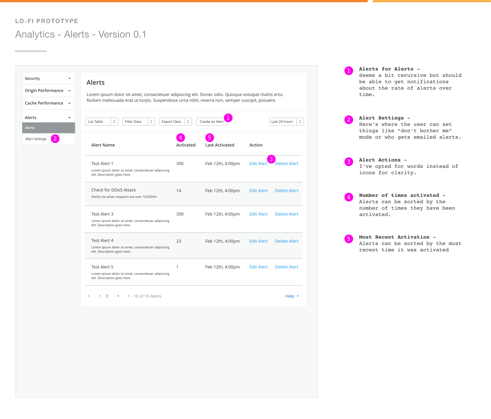

Cloudflare Analytics app
2016 - 2019
Analytics is a key part of how a customer want to use Cloudflare, but currently the existing analytics has 3 major problems. One, there’s a lot of data that could be better visualized and organized for easier comprehension. Two, there’s a lot of data we can show to customers but currently we don’t. And lastly, we have a lot of data we aren’t capturing and customer would like to have. The goal of this project would be to redesign analytics so that we have a well design system that would allow us to restructure the existing charts, easily create new charts, and start planning out more data visualizations.
back to the toparrow_upwards
back to portfoliosubdirectory_arrow_left
01. Problem
We started this project working with the Data team PM and engineers to improve customers' access to their Cloudflare data. We believe that the only way for customers to take actionable steps to improve their Cloudflare experience was to be able to measure the net changes.
To kickstart our understand of the customers, we starting by working directly with our custommer support team. With their help we were able to access direct customer feedback from direct and indirect sources.
One of our key objectives was also to see if centeralizing analytics was the right call. As the metaphor we used was "Do you need to have the speakers in the same room as the radio controls?" meaning if it was important to customers if the analytics was located next to the services that they measured.
02. Research
To build an analytics product on the self-serve portal for Cloudflare meant that our primary customer that we wanted to help would be the "non-ELS" customers. (ELS stands for Enterprise Log Share, for more on the feature we built for those customers check out Cloudflare Logpush) This would be useful for a larger group of customers and can make it easier for the advanced ELS customers to check on simple analytics as well.
We took what different feedback we got from the customer facing teams and group them into the corresponding buckets. We marked Improvements to over all UX, being able to "drill down" levels of data, and documentation as some of the areas we felt were most asked for.
We also wanted to assess the types of data we currently had on the platfrom to see what were important to customers though the eyes of our customer facing teams.
03. Analysis

Taking in all the feedback and research we had, we started build mental models and user flows of how users intake data and use it. We focused on testing out
3 different paths.
1. If some analytics tells them that something needs to be adjusted, they'll want to adjust it.
2. If some analytics needs to be shared, they'll find a way to share it with the relevant parties.
3. If nothing needs their attention right now, but if it does happen later they'll want to know, they would set up an alert to warn them before their customers do.
We can also use the navigation to help customers with specific types of jobs-to-be-done. Whether they are looking at a bigger picture dashboard to investigate and monitor general pulse of their website, going in to check on a specific feature, or doing a reverse search starting with the results to look for the cause.
04. Design
From this we can up with a lot of different designs and components for the Analytics page a good number of them were implemented within the range of this project, some where shelved for a future update, and others fell out of scope.
First we started with charts, different types of charts for all different types of metrics that customers were looking for. To understand a bit more about how I went about designing charts check out the work done in the Cloudflare UI design system that concerns usability and accessbility on charting colors.

I designed a widget based dashboard for the primary Web traffic screen of the Analytics app. This would give some coverage for users on a large number of metrics that can be quickly
glanced over before drilling down to more specific data.
One idea that we wanted to build in into future updates was to allow some level of customization into this
dashboard to make it more useful for customers. "If a customer team could have this page open on a big monitor to use as a team dashboard would be our dream scenario!"
The "Custom analytics" page was designed as the ultimate drill down where we wanted the user to get creative with the types of data that could be shown. By having a "data sandbox" with access to compare and map different types of metrics and data together, it can become a more active tool that the users can customize to their needs and workflow.

Finally, something that we had planned but not implemented in this project range was the creation of a analytics specific alerts feature. Looking back
at this now, I think I wouldn't have built this but put some more thought into how this might work with a more holistic approach to platform notification.
Notification overload and desensitization is a common problem and comes from having a large platform and mutliple points of possible notifications. Unifying
notification would be a bit more to bite off then what we could with this project but would be something that could be brought up with future teams.